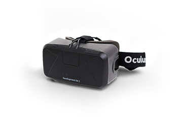

Fast Acting Relief of
Virtual Reality Motion Sickness
for VR Developers & Enthusiasts
What is VR motion sickness?
The physiology behind VR sickness is not clearly understood.
There are various technical aspects of virtual reality that can induce sickness, such as mismatched motion, field of view, motion parallax, and viewing angle. Additionally, the amount of time spent in virtual reality increases the presence of symptoms. The VR companies are working hard to resolve this issue, but until then, we have VIRMO.
What is VR Motion Sickness?
VR Motion Sickness is a massive issue in the evolution of VR technology.
The most common symptoms are general discomfort, headache, stomach awareness, nausea, queasiness, vomiting, and dizziness. Virtual reality sickness is different from motion sickness in that it can be caused by the visually-induced perception of self-motion; real self-motion is not needed.
Directions
Take the appropriate dosage 1/2 hours before putting on your VR headset, or when you experience symptoms to help prevent or relieve nausea and vomiting associated with virtual reality motion sickness.*
Take 2 capsules. Do not take more than 4 capsules in 24 hours.
Too young for virtual reality. Please experience reality first.
Ginger (zingiber officinale)(root)1100mg
Other ingredients: Gelatin, Cellulose, Silica
*Tested by VR developers. These statements have not been evaluated by the food and drug administration. This product is not intended to diagnose, treat, cure, or prevent any disease.
Test your Tolerence
Test the effect of VIRMO by looking at these VR demos!
Download software For OCULUS RIFT
Feeling sick under 30 seconds
You may want to try VIRMO
Feeling sick under 3 minute
Average tolerance
Not feeling sick over 3 minutes
You were born to live in virtual reality
* The result of VR and the effects of VIRMO will vary depending on the individual.
Please discontinue the demo if you start to feel sick.